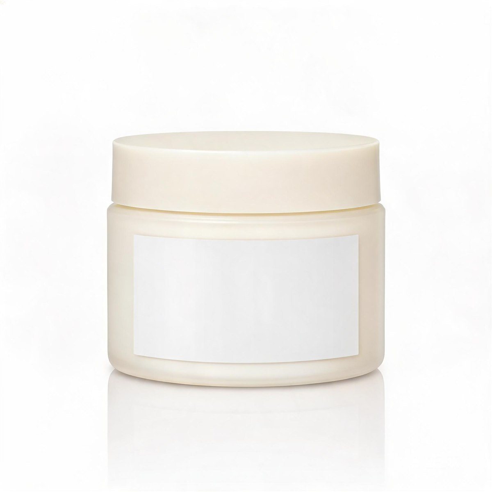
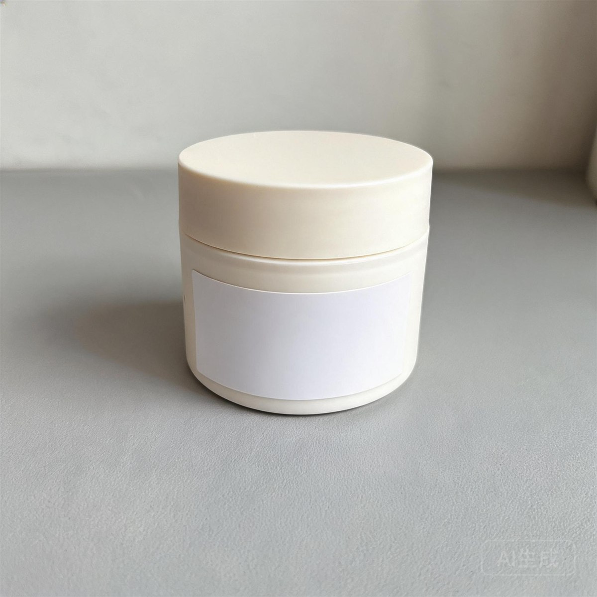
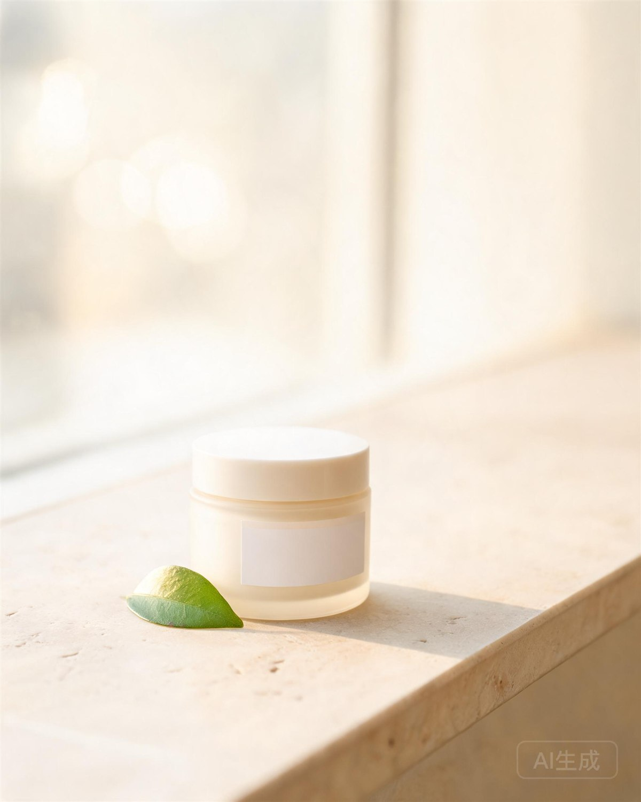
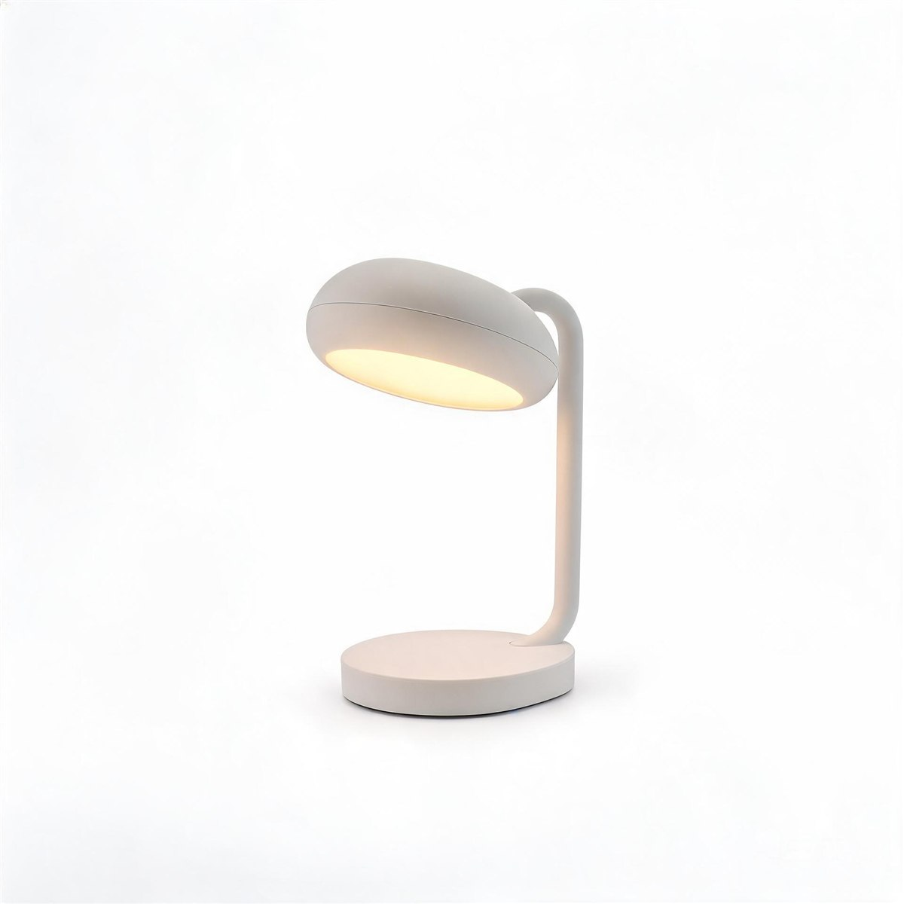
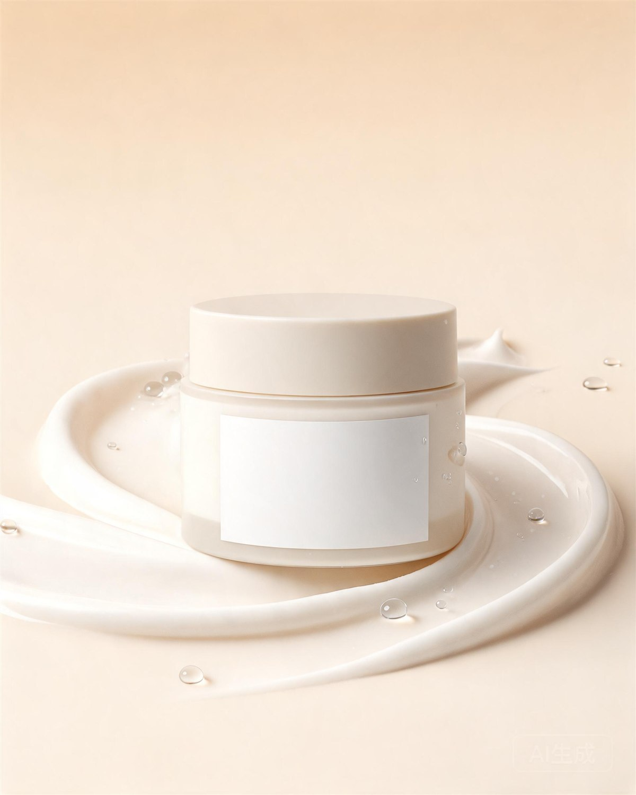

新品上架包MOON
CALM
CALM
月光舒缓面霜
待复核天猫 · 5 件交付物 · 更新于 12 分钟前
72%
3 个素材已通过
快捷创意工厂
上传商品图、确认必要信息、选择风格与交付即可开始；费用在生成前明确说明。
为什么是千图百炼


◒流程示意 · 图片为真实模型生成样例
正在读取你的工作概览…
回到最近的商品项目
还没有真实项目。点击「新建商品项目」开始你的第一个商品。

新品上架包天猫 · 5 件交付物 · 更新于 12 分钟前

进行中京东 · 3 件交付物 · 更新于昨天
选择任务模板，快速进入生产
可发布状态一目了然
我的商品
每个商品都保留事实、素材与原图；可继续制作、再做一套，或从已有风格制作新品。
以下项目与商品事实自动保存，刷新不会丢失。下方演示数据仅用于功能展示，与真实数据互不影响。
正在读取真实项目…
每个项目都有统一工作台：上传→核对事实→选效果→确认报价→生成→修改→下载。创建后自动从工作台开始，刷新或重开浏览器会恢复已有任务。
封面与素材图片为真实模型生成样例
首次制作
上传商品 → 确认必要信息 → 风格与交付；费用在生成前用真实报价说明，不硬编码。
检测到上次未完成的向导草稿。
浏览器预览（尚未保存到服务端）· 刷新或关闭页面后不可恢复，保存结果以下方服务端返回为准。
正在读取文字识别结果…
关键项必须勾选「已确认」才能确认版本；OCR 候选一律待确认，不能凭猜写入容量、尺寸、材质、成分、功效或品牌。卖点仅作信息说明，不会自动写入商品事实。
任务已提交。
真实进度以工作台任务状态与事件流为准，这里不虚构进度百分比。
我的作品
按商品与任务查看生成的图片、当前选用版本和质量检查结果；历史版本不会被覆盖。
正在读取真实作品…

V2品牌与模板
品牌配方记录你常用的背景、光线、构图与文字排版；新商品套用同一个配方，整套图视觉保持一致。
正在读取品牌配方…
品牌配方只约束视觉风格（背景/光线/构图/文字排版），不会污染具体商品的事实（名称、规格、包装颜色等仍以项目内确认为准）。
还没有选中交付项
工作台会在刷新或重新打开时自动恢复已有任务；查看历史结果不会再次扣费。
仅此一张受影响：文字排版修改只重画这张图的文字层，其他交付物、任务与账本保持不变。
正在加载预览…
本次未重新调用生成模型，底图保持不变；只重画文字层并重新执行质量检查。
正在读取文字层…